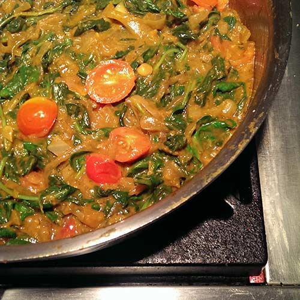
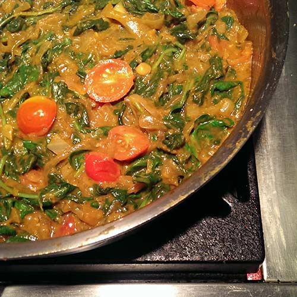

Culinary Events
For a limited time, Estella will be teaching workshops at Williams Sonoma on Bloor St. This is a limited time engagement, so reserve your spot and take advantage of this amazing opportunity!
Each workshop includes a cooking demonstration, samples of featured dishes, and take home recipes. Enjoy a 10% savings on select same-day store purchases.
Green Power
Smoothie Workshop


Ready to load your body with some amazing nutrients? Add more greens to your diet and achieve extraordinary health and wellness by drinking one green smoothie a day, without changing anything else. Discover the health-boosting benefits to jump-start your weight loss, increase energy levels, clear your mind, and improve overall health. Everyone from athletes to weekend warriors, to desk jockeys can benefit from this!
What you will learn:
- How drinking green smoothies can heal you from the inside out
- The perfect formula to make great tasting smoothies every time
- How to boost immune and digestive system function
- How to make quick and easy smoothies
- Superfoods that will up your smoothie game
What you will get:
- A shopping list of ingredients and recipe ideas
- Green smoothie samples
You will leave this workshop inspired and equipped with all the knowledge and tools you need to start making your own smoothies.
Saturday August 6, 2016 | 10:00am – 12pm
Glow from Within
Cooking Workshop


Discover a long term solution to staying healthy. Estella will teach you how to prepare simple, delicious, healthy meals and feel satisfied. Cook with variety so you never get tired of eating the same thing. Learn to break unhealthy habits, reduce cravings, improve digestion, and strengthen your immune system while enjoying effortless weight loss, improved sleep quality, and improved health.
What you will learn:
- What foods cause inflammation
- How to identify food allergies and triggers
- Why you should eat or eliminate certain foods
- How to swap in healthy alternatives to satisfy common cravings
- Build confidence and inspire your taste buds
- To reduce cravings and never feel hungry again
What you will get:
- A cooking demo of Estella’s top meals for a busy schedule
- Basic nutrition guidelines to follow
- A list of foods you should eat, limit, and avoid
Saturday August 13, 2016 | 10:00am – 12pm